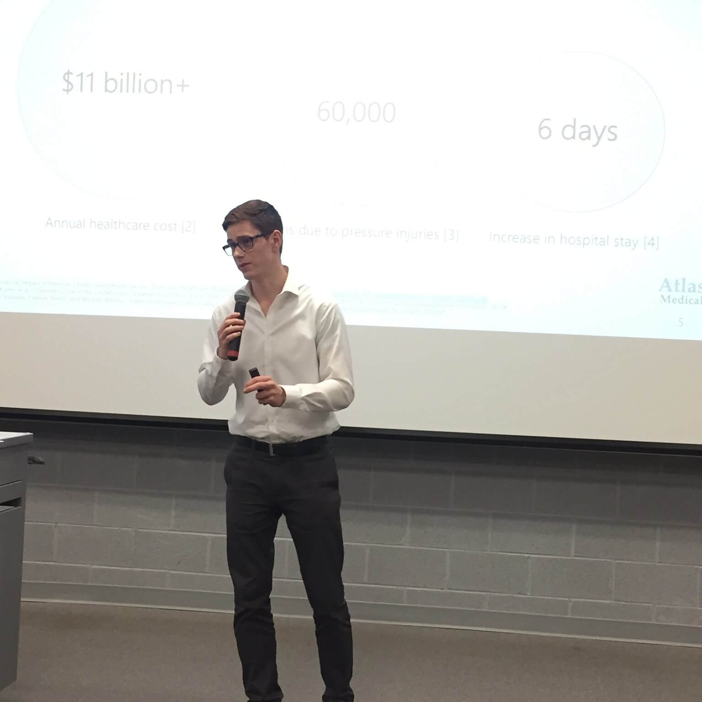

Atlas Medical was selected to represent the University of Waterloo in the Ontario Engineering
Competition for the category of Innovative Design. The team will attend the competion at
McMaster University from January 18th - 20th.

Michael Jonas pitched the Atlas P1 as a solution for pressure injury prevention, the judges
agreed with the value proposition and Atlas moved to the finals.

Jake Fisher from Atlas Medical convinced a panel of five judges that Atlas has the capability to
build pressure injury prevention technology. Through this award Atlas Medical recieved $3000 in
funding.

Colin Cooke from Atlas Medical succesfully pitched the problem of pressure injury prevention for
the Quantum Valley Problem Pitch compeititon. Atlas Medical acquired $5000 in funding to be
used for R&D